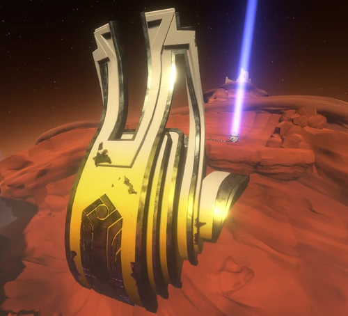
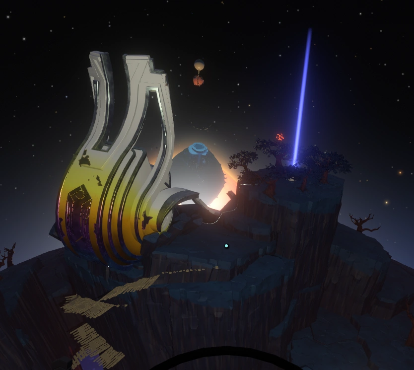
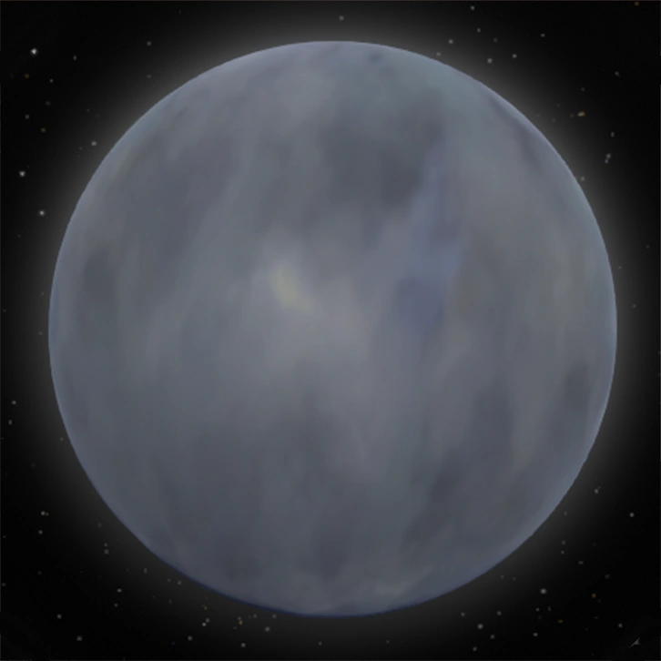

Ligne du temps
L'arrivée des Nomais
Escall, le chef des Nomais, reçoit le signal de l'Œil de l'Univers. Ce signal mystérieux ressemble fortement à un œil et, selon leur interprétation, serait plus ancien que l'Univers lui-même. Ils téléportent leur vaisseau dans le système solaire du jeu, mais celui-ci se retrouve coincé sur la planète Sombronces.

L'Œil de l'Univers
La destruction du vaisseau et l'évacuation
Les lianes de Sombronces commencent à attaquer et à détruire le vaisseau des Nomais. Quatre capsules de sauvetage sont alors utilisées dans l'espoir de s'échapper :
- Atterrit sur Cravité, une planète avec un trou noir en son centre, autour de laquelle orbite une lune nommée la Lanterne. Cette lune volcanique projette constamment des météorites en direction de Cravité.
- Atterrit sur Sablière Rouge, une planète rocheuse et désertique.
-
- Ses propulseurs ont été endommagés par les lianes pendant son voyage hors de Sombronces.
- Escall se trouve à bord de cette capsule. Il tente de ramener les Nomais vers le vaisseau principal, car, sans propulseurs, ce n'est qu'une question de temps avant qu'ils ne manquent d'oxygène.
- En raison du phénomène de duplication du signal sur la planète, ils se retrouvent devant une graine émettant le signal du vaisseau principal, mais dont l'entrée est trop petite pour permettre à l'un d'entre eux d'y entrer.
- Échoue à décoller, car le vaisseau succombe aux dégâts qu'il a subis.
La reconstruction de la civilisation
À la suite de ces événements, la moitié des Nomais sont morts. De plus, puisque toute leur technologie se trouvait à bord de leur vaisseau, désormais détruit, les survivants doivent reconstruire leur civilisation dans ce nouveau système solaire.
Les deux groupes qui ont survécu n'ont aucun moyen de communiquer entre eux. Chacun fait donc ce qu'il peut pour assurer sa survie.
-

Le groupe de la capsule 2, que nous appellerons groupe 2 dans la suite de cette ligne du temps, établit une colonie sur Sablière Rouge, dans la seule grotte suffisamment grande pour les abriter. -

Le groupe de la capsule 1, que nous appellerons groupe 1 dans la suite de cette ligne du temps, dispose de davantage de choix quant à l'endroit où établir sa colonie. Il décide toutefois de s'installer sous la surface de la planète afin d'essayer d'exploiter le trou noir en son centre.
Le groupe 1 découvre que la croûte de Cravité possède des propriétés gravitationnelles. Il crée alors les roches gravitationnelles, qui lui permettent de naviguer dans le reste du sous-sol de la planète. Le groupe les utilise pour atteindre le pôle Nord, où il construit la Forge du trou noir.
Le groupe 1 réussit ensuite à recréer la technologie de téléportation qu'utilisait leur vaisseau et qui leur avait permis de rejoindre le système solaire. Il combine cette technologie avec les roches gravitationnelles afin de réinventer le voyage spatial.
Grâce à ces technologies, le groupe 1 rejoint le groupe 2.
L'exploration du système solaire et la Lune quantique
Maintenant réunis, les Nomais commencent à observer et à explorer le système solaire.
Ils découvrent la présence d'une Lune mystérieuse qui semble se téléporter à travers le système solaire et disparaître occasionnellement. Intrigués par cette découverte, ils construisent un outil au pôle Sud de Sablière Rouge capable de repérer cette lune.

En parallèle, ils découvrent que si quelqu'un ou quelque chose tombe dans le trou noir, il est téléporté vers le trou blanc, situé à l'autre bout du système solaire. Ils construisent donc la Station du trou blanc, qui leur permet de se téléporter et de revenir sur Cravité au cas où quelqu'un tomberait dans le trou noir.
Ils étudient la Lune et construisent deux tours destinées à documenter leurs découvertes. Celles-ci expliquent le comportement particulier de la Lune ainsi que les principes quantiques, permettant ainsi de transmettre leurs connaissances aux autres membres de leur civilisation.
-
La Tour des Épreuves Quantiques
Située sur la planète Léviathe, elle enseigne le concept d'observation quantique : un objet quantique ne se déplace pas lorsqu'il est observé par un observateur conscient.
-
La Tour du Savoir Quantique
Située sur la planète Cravité, elle présente le voyage d'un Nomai notable nommé Solanum et enseigne le concept d'intrication quantique : un phénomène où deux objets partagent des propriétés quantiques liées, même à distance.
Ils découvrent que cette Lune orbite occasionnellement autour du mystérieux Œil de l'Univers, ce qui explique les quelques fois où elle semble disparaître. Cette découverte les pousse à recentrer leur attention sur l'Œil de l'Univers.
Le Projet Sablière Noire
En parallèle, un autre groupe de chercheurs étudie les trous noir et blanc du système solaire. Ils découvrent qu'un Nomai qui entre dans le trou noir en ressort par le trou blanc avant même d'y être entré. Ils découvrent ainsi une forme de voyage dans le temps. Ils ne sont toutefois pas encore capables d'exploiter pleinement cette technologie, car elle nécessite une grande quantité d'énergie qu'ils ne possèdent pas.
Ils commencent alors le Projet sablière noire, qui vise à développer tous les autres outils nécessaires à l'exploration de l'Œil de l'Univers, ainsi qu'à générer suffisamment d'énergie pour exploiter le phénomène de voyage dans le temps qu'ils ont découvert.
Lorsque tous les composants du Projet Sablière Noire sont terminés, les Nomais tentent de faire exploser le Soleil afin d'exploiter l'énergie générée par la supernova. Cependant, leurs efforts échouent et le Projet Sablière Noire est abandonné.
Après avoir consacré autant de temps et d'efforts à ce projet, de nombreux Nomais sont fortement découragés par cet échec. Ils commencent à se demander si leurs efforts ont été inutiles et s'ils ne devraient pas plutôt utiliser leurs ressources pour reconstruire leur vaisseau et quitter le système solaire.
L'arrivée de l'Intrus
Soudainement, une comète extraterrestre mystérieuse arrive dans le système solaire. Les Nomais la baptisent L'Intrus.
Quelques Nomais, notamment Pye, Poke et Clary, motivés par leur curiosité, lancent une navette spatiale afin d'explorer cette comète.
Les instruments de mesure de l'énergie de la navette détectent un signal mystérieux provenant du centre de la comète.
Pye et Poke voyagent jusqu'au centre en traversant des cavernes et découvrent un boîtier sphérique contenant une forme étrange de matière, qui est à l'origine de l'énergie qu'ils avaient détectée.
Lorsque la comète s'approche suffisamment du Soleil, le conteneur explose et la matière étrange se répand dans tout le système solaire, tuant instantanément tous les Nomais.

La fin de la civilisation Nomai dans le système solaire.